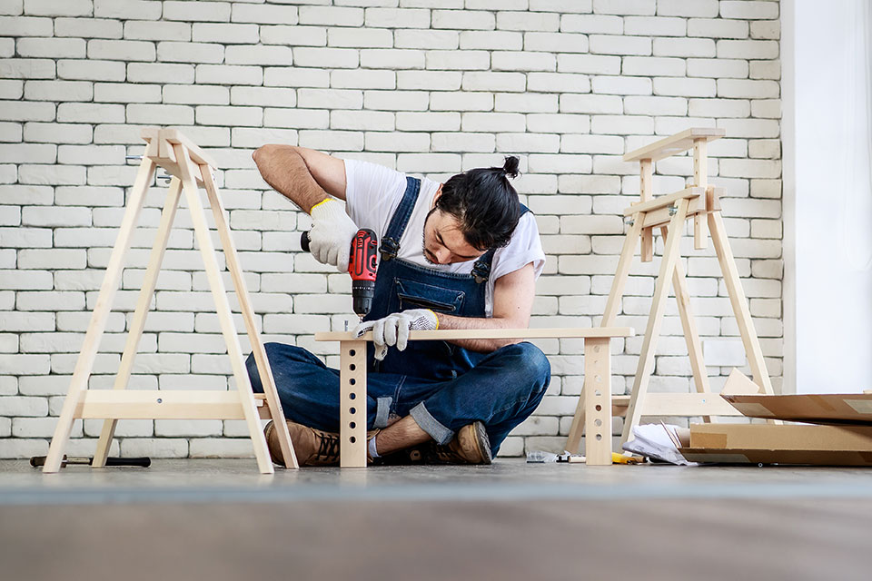
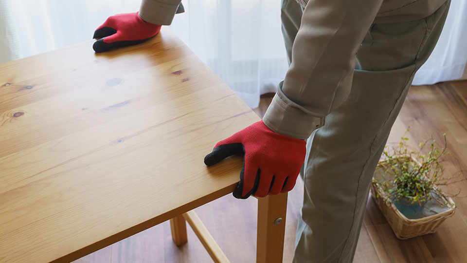
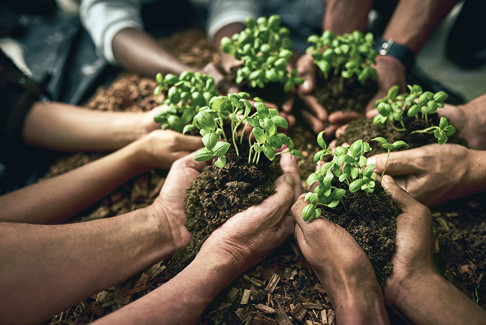

글. 양원모

일본에서 모노즈쿠리(ものづくり)가 새로운 중독 치료 해법으로 떠오르고
있다. 모노즈쿠리는 온 힘을 쏟아 최고 제품을 만든다’라는 뜻이 담긴 일본
특유의 제조 철학이다. 장인정신(匠人精神)이 중독으로 고통받는 이들의
삶을 재건하고 있는 것이다.
일본 사회는 심각한 중독 문제에 직면해 있다. 2017년 기준 인터넷
중독으로 추정되는 학생 수는 93만 명에 달했으며, 이는 5년 만에 두 배
가까이 증가한 수치다. 사회로부터 자신을 격리하는
히키코모리(ひきこもり) 인구는 2010년 기준 약 69만 6,000명으로
추산된다. 이런 고립은 한 해 2만 1,000명 이상이 홀로 죽음을 맞이하는
고독사로 이어지고 있다.
작업 치료(作業療法)는 공예, 도예, 목공 같은 적당한 육체 작업을
바탕으로 한 치료법이다. 수공예는 손을 사용함으로써 집중력을 높이고 뇌
기능을 활성화하며, 설명하기 어려웠던 감정을 건강하게 표출시켜 신체
운동 또는 정신 심리 기능의 개선을 꾀한다.
모노즈쿠리는 중독 환자의 작업 치료 활동과 일치하는 부분이 많다.
체계적·단계적 작업 과정에 집중하는 건 중독의 특징인 ‘즉각적인 만족
추구’ 성향을 완화하며, 인내심과 생활 리듬을 회복하는 데 도움을 준다.
또 품질제일주의(品質第一主義) 정신은 자신의 노력에 대한 자부심으로
이어져, 노력을 긍정하고 자존감을 높이는 심리적 기제로 작용할 수 있다.
특히, 일본의 모노즈쿠리 철학이 강조하는 ‘팀 파워(チ-ムパワ-)’, 즉
공동의 목표 달성을 위해 협력과 신뢰를 통해 시너지를 창출하는 집단적인
힘은 중독 회복 시설에서 중요한 역할을 하는 동료 지원(Peer-support)
모델, 다시 말해 비슷한 경험을 가진 회복자들이 서로 공감하고 지지하며
돕는 접근법과 그 핵심 원리가 정확히 일치한다.
함께 요리하거나, 농작물을 돌보는 등 공동 목표를 향해 협력하는 과정은
단순한 작업이 아니라, 회복자들이 팀의 일원으로서 역할을 수행하며
건강한 사회성을 키우고, 상호 공감을 바탕으로 신뢰 관계를 다시 쌓는
일종의 실질적인 ‘훈련장’이 된다.

일본의 약물중독 재활 시설 네트워크 다르크(DARC, Drug Addiction
Rehabilitation Center)의 농작물 재배 프로그램은 모노즈쿠리 철학을 실제
치료에 적용한 대표적 사례다. 단약에 성공한 동료들이 단약을 희망하는
동료를 돕는 것을 핵심으로 삼는 이 프로그램은 그룹 미팅, 생활 기술
훈련, 정신적·신체적 회복 활동 등을 포함한다.
프로그램 목표는 참가자들이 물건 만들기의 어려움과 고마움을 느끼고,
함께 일하는 게 인간관계 형성에 도움이 된다는 걸 배우는 것이다. 씨앗이
싹트고 자라 열매를 맺는 느리고 자연스러운 순환 과정은 그 자체로 ‘회복
과정’에 대한 강력한 은유가 된다. 자신이 직접 기른 작물로 식사를
준비하고, 함께 나눠 먹는 경험은 참가자들에게 깊은 성취감과 유대감을
선사한다.
니가타현 산조시(三条市)의 히키코모리 지원센터는 모노즈쿠리의 또 다른
혁신 적용 사례다. 사회적으로 고립된 이들을 돕는 이 센터는 산조시
모노즈쿠리 학교(三条市ものづくり学校) 안에 자리 잡고 있다. 무언가를
만들고, 배움으로써 사회와 새로운 관계를 구축하는 곳임을 공간적으로
드러내고 있는 것이다.

모노즈쿠리의 사례는 사회 깊숙이 뿌리내린 문화적 개념을 치료에
활용함으로써 서구식 대화 치료에 대한 거부감을 줄이고, 치료 목표를 더
직관적으로 받아들이게 하는 ‘문화적 치료’의 무궁무진한 가능성을
보여준다. 익숙하고 긍정적인 문화적 서사 안에서 치료가 진행될 때
참여도는 높아지고, 사회적 낙인은 줄어들 수 있다.
자국의 고도성장을 이끌었던 핵심 철학을 고도성장의 병폐를 치유하는
도구로 활용한 발상의 전환은 우리나라에도 많은 점을 시사한다. 영국
철학자 베이컨은 “죽고 싶을 때 일을 하라”는 말을 남겼다. 이 말은 중독에
관해서도 유효하다.